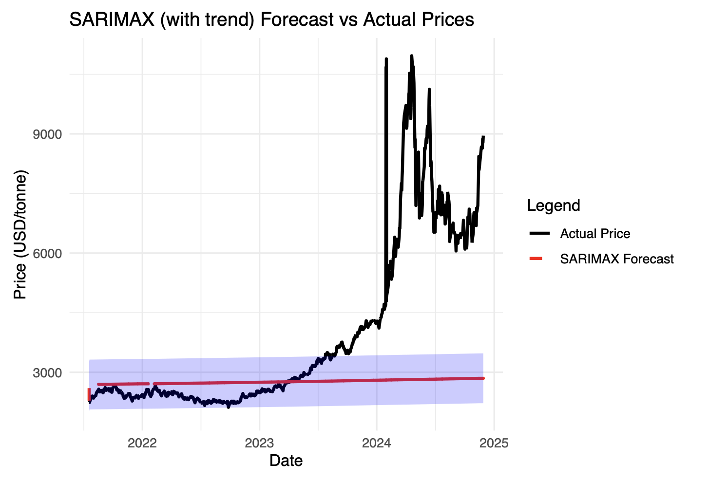
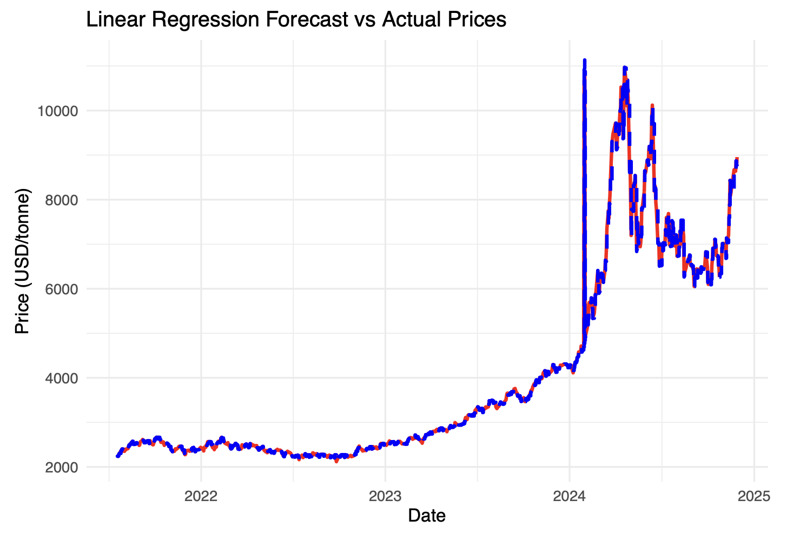

ICCO daily cocoa prices
10 March 1994 – 27 February 2025
Price measured in USD per tonne.
05 / COMMODITY & CLIMATE ANALYTICS
Can weather help explain the next move?
A statistical forecasting project combining historical cocoa prices with temperature and rainfall observations from Ghana. The study compares price-only models with weather and lag-based approaches, examining what they capture—and where forecasts fall short during sharp market shifts.
01 / DATA PREPARATION
Cocoa price forecasting matters to producers, buyers and policymakers because large price swings complicate planning. This project asks whether weather observations add useful information beyond the price history itself.
10 March 1994 – 27 February 2025
Price measured in USD per tonne.
Daily average, maximum and minimum temperature, plus precipitation.
The analysis standardized date formats, removed commas from price values and joined the two datasets by date. Weather records without a matching price were excluded.
Missing prices and temperature extrema were filled using medians. Missing average temperatures were derived from the daily maximum and minimum; reversed extrema were swapped. Missing precipitation was set to zero in the original workflow—an assumption that needs checking because missing rainfall is not necessarily no rainfall.
The report describes an 80/20 split, but its statements about date ordering conflict. The comparisons below reproduce the report’s outputs; the exact temporal split has not been revalidated.
02 / PRICE-ONLY BASELINES
Time-series plots showed a pronounced late-period price rise. The autocorrelation function (ACF) decayed slowly, while the partial autocorrelation function (PACF) showed a strong first lag. These patterns motivated models that account for dependence between consecutive observations.
An exponential-smoothing baseline assessed how far the historical level and trend could carry a forecast.
The R function auto.arima() selected a specification from the training series, combining autoregressive, differencing and moving-average terms.
What happened: both approaches produced relatively flat forecasts and missed the sharp increase in observed prices. ARIMA’s reported MAPE was 32.84%, leaving substantial room for improvement.
03 / WEATHER & TREND
ARIMAX added precipitation and temperature as external predictors. The study then explored a specification labelled SARIMAX and a trend-augmented version to represent longer-term movement.
Weather alone made little difference: ARIMA and ARIMAX reported almost identical errors. Adding a trend reduced reported MAPE from 32.84% to 28.40%, but did not resolve the model’s underprediction during the surge.

The improvement captures some long-run movement; it does not show that weather explains the price shock. Model labels here follow the original report.
04 / FEATURE-BASED REGRESSION
The next approach transformed prices to a logarithmic scale and created seven lagged price features. Linear regression combined those recent-price signals with the weather variables.

The report records MAPE of about 0.26% for this model. That is a reported result, not a validated multi-step forecasting advantage: the use of observed lagged prices and forecast-time weather must be checked against the other models’ forecast horizons.
05 / RESULTS & INTERPRETATION
| Model | MAE | RMSE | MAPE |
|---|---|---|---|
| ARIMA | 1,905.48 | 2,917.44 | 32.84% |
| ARIMAX | 1,905.46 | 2,917.43 | 32.84% |
| SARIMAX + trend | 1,634.60 | 2,570.50 | 28.40% |
| Lag-based regression* | 14.49 | 155.16 | 0.26% |
Lower values indicate smaller error within an evaluation setup. *Forecast horizons and feature availability have not been confirmed comparable. Values are rounded from the report, not independently reproduced.
Weather-augmented models did not materially improve on ARIMA in the reported comparison.
The trend specification reduced average error but still missed the scale of the price increase.
A useful next step is a shared rolling-origin evaluation: train on past observations, predict the same horizon, and compare against a simple last-observed-price baseline.
Source: STA457 Final Project: Analyzing the Impact of Climate Changes on Cocoa Futures Prices, 7 April 2025. This page summarizes the original academic team report; it does not present a new model run.
The report contains inconsistent split descriptions and ETS metrics, so ETS is not included in the results table. Weather units, station representativeness, imputation before or after splitting, and forecast-time predictor availability require verification from code and data. The printed “SARIMAX” summary shows an ARIMA(2,1,0) error structure; seasonal terms need confirmation. AIC values across differently transformed outcomes are not used here to rank models.
Long-horizon recursive projections in the report are exploratory and are not presented as current price forecasts. No causal climate effect or realized business impact was established.